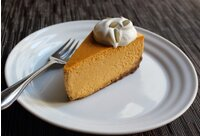

Pumpkin Cheesecake

Description
We're combining America's favorite cheese-based dessert with America's favorite gourd!
(Sorry, cucumbers!) There's a lot of ingredients, but the good news is it's super-easy to do.
Serve with a dollop of whipped cream and a sprinkling of toasted pumpkin seeds.
ingredients
Crust:
- 2 cups gingersnap cookie crumbs
- 1/2 cup brown sugar
- 3 tablespoons all-purpose flour
- 1/4 cup butter, melted
- 1 egg yolk
Filling:
- canola oil cooking spray
- 4 (8 oz) pkg cream cheese @ room temp
- 1 cup packed brown sugar
- 1/2 cup white sugar
- 2 (15oz) cans pure pumpkin puree
- 1 tsp ground cinnamon
Steps
- Stir gingersnap crumbs, 1/2 cup brown sugar, 3 tablespoons flour, and melted butter together in a bowl until mixture resembles sand. Stir 1 egg yolk into crumbs until thoroughly combined and crust mixture holds its shape when pressed.
- Move a rack to the center position in oven. Preheat oven to 325 degrees F (165 degrees C).
- Spray a 10-inch springform pan with cooking spray, spread crumbs into pan, and press crumbs into a firm crust going about 1 inch up the side of the pan. Place the pan on a heavy sheet of aluminum foil and bring the foil up the sides of the pan to the rim, crumpling it close to the pan and making a barrier to prevent water from leaking into the cheesecake. Place the foil and springform pan into a large roasting pan.
- Place cream cheese, 1 cup brown sugar, and white sugar into the work bowl of a large stand mixer fitted with paddle attachment; mix low speed until smooth, about 1 minute. Raise speed to high and mix until light and fluffy, about 3 more minutes.
- Place pumpkin puree in a separate large mixing bowl; stir in cinnamon, ginger, nutmeg, allspice, salt, vanilla extract, and bourbon whiskey until combined. Whisk 1/4 cup flour into pumpkin mixture, followed by eggs and yolks. Whisk cream cheese mixture into pumpkin mixture until filling is completely smooth and free of lumps. Pour filling into crust; use a spatula to lightly and rapidly jiggle the filling in the center of the cheesecake to help shake out any bubbles.
- Carefully place cheesecake in roasting pan onto center rack of oven and fill roasting pan with enough very hot (almost boiling) water to reach halfway up the side of springform pan.
- Bake until an instant-read thermometer inserted into the center of the filling reads 155 to 160 degrees F (70 degrees C), about 1 hour and 45 minutes. Check temperature after 1 1/2 hours. Filling will still be slightly jiggly in the center.
- Turn off oven heat and open oven door for a few seconds to let out most of the hot air. Use a thin knife to separate cheesecake edge from inside of pan to help prevent cracking. Close oven door almost all the way, leaving a small opening (about 1 inch) to release additional heat. Let cheesecake cool in warm oven for 1 hour to finish setting. Remove cheesecake from water bath and let cool to room temperature on a counter, 2 to 3 more hours. Cover cheesecake with aluminum foil and refrigerate until thoroughly chilled, at least 3 hours but preferably overnight.
- Use a folded paper towel to remove any moisture that has formed on top of the cheesecake before releasing and carefully lifting the pan from the cheesecake.